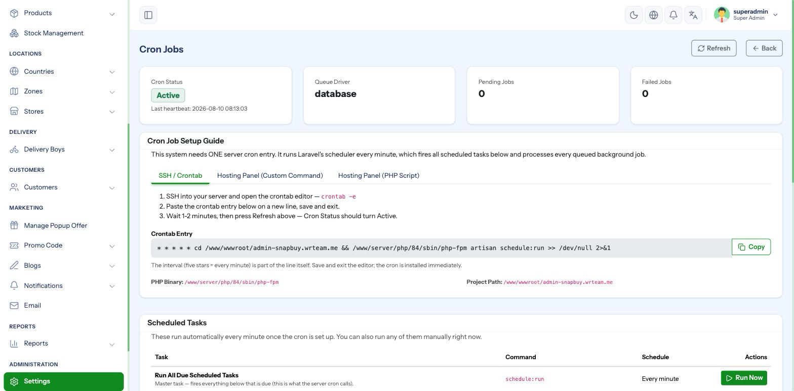
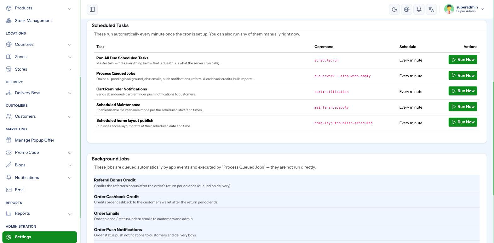
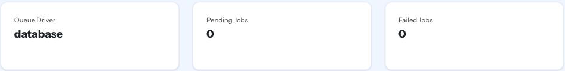

Cron Job Setup
Do not skip this page
SnapBuy needs one server cron job. Without it the panel still loads and looks healthy, but abandoned-cart reminders never send, scheduled maintenance windows never start or end, scheduled home layouts never publish, and every queued job — order emails, push notifications, bulk imports, referral bonuses, cashback — sits unprocessed forever.
Nothing on the dashboard warns you. This is the single most common cause of "notifications are not working" support tickets.
The one line you need
SnapBuy uses Laravel's scheduler. You register one cron entry that runs every minute; SnapBuy decides internally what is due.
* * * * * cd /home/username/snapbuy && /usr/bin/php artisan schedule:run >> /dev/null 2>&1Copy the exact line from your panel
Do not type the paths by hand. Open Settings → Cron Jobs in the admin panel — it prints the correct line for your server, with the real project path and the real PHP binary already filled in, ready to copy.

The page gives the same command in three formats, because hosting panels ask for it differently:
| Format | Use it when |
|---|---|
| Crontab line | You have SSH and run crontab -e — interval included |
| Command only | Your hosting panel has its own interval picker (cPanel, Plesk) |
| PHP script style | The panel asks for a PHP file plus arguments |
Adding the cron job in cPanel
- Log into cPanel.
- Under Advanced, open Cron Jobs.
- Under Common Settings, choose Once Per Minute (* * * * *).
- Paste the Command only version from Settings → Cron Jobs into the Command box.
- Click Add New Cron Job.
Use the full path to PHP
php artisan schedule:run often fails on shared hosting because the default php is an older version. Use the absolute binary path shown on the Cron Jobs page — for example /usr/local/bin/ea-php83. If the cron runs but nothing happens, this is usually why.
Adding the cron job over SSH
crontab -eAdd the line, save and exit. Confirm it registered:
crontab -lVerifying it works
SnapBuy writes a heartbeat into the cache every minute from inside the scheduler. The Cron Jobs page reads it back, so you get a real answer rather than a guess.
- Add the cron job.
- Wait two minutes.
- Open Settings → Cron Jobs.
| Indicator | Meaning |
|---|---|
| 🟢 Cron active | The heartbeat is under 150 seconds old — your cron is firing correctly |
| 🔴 Cron inactive | No heartbeat, or older than 150 seconds — the cron is not running |
The Setup Guide step for Cron uses this same heartbeat, so it ticks itself off once the job runs.
What the scheduler runs every minute
| Task | Command | What it does |
|---|---|---|
| Heartbeat | (internal) | Proves to the panel that cron is alive |
| Process queued jobs | queue:work --stop-when-empty --max-time=55 | Drains the job queue, then exits before the next minute |
| Cart reminders | cart:notification | Sends abandoned-cart notifications per your Cart Settings |
| Scheduled maintenance | maintenance:apply | Turns maintenance mode on and off at the times you scheduled |
| Publish home layouts | home-layout:publish-scheduled | Publishes Home Builder drafts at their scheduled time |
Each of these can also be triggered manually from Settings → Cron Jobs using the Run now button — useful when testing, and for confirming a task works before you trust the schedule.

Work handled by the queue
These are not cron entries. They are dispatched by the application and executed by the queue:work run above — which means they all stop if the cron job is missing:
- Referral bonus credit
- Order cashback credit
- Order confirmation and status emails
- Order push notifications
- Bulk promotional emails
- Bulk push notifications
- Product bulk import
- Cart reminder notifications
Queue health
The Cron Jobs page also reports queue status:
| Field | What to look for |
|---|---|
| Driver | database by default |
| Pending jobs | A small number that keeps changing is normal. A large number that only grows means the queue is not being processed. |
| Failed jobs | Should stay at zero. Anything here failed permanently. |
| Oldest pending job | If this timestamp is hours old, your cron is not running. |

Why --stop-when-empty --max-time=55
A permanent queue worker is not possible on most shared hosting. Instead, SnapBuy starts a worker every minute that processes whatever is waiting and exits after at most 55 seconds — before the next minute's run begins. On a VPS you may prefer a Supervisor-managed permanent worker; see below.
Optional — a permanent worker on a VPS
If you run your own server and want jobs processed instantly rather than up to a minute later, use Supervisor.
Create /etc/supervisor/conf.d/snapbuy-worker.conf:
[program:snapbuy-worker]
process_name=%(program_name)s_%(process_num)02d
command=php /var/www/snapbuy/artisan queue:work --sleep=3 --tries=3 --max-time=3600
autostart=true
autorestart=true
user=www-data
numprocs=2
redirect_stderr=true
stdout_logfile=/var/www/snapbuy/storage/logs/worker.log
stopwaitsecs=3600Then:
sudo supervisorctl reread
sudo supervisorctl update
sudo supervisorctl start snapbuy-worker:*Keep the schedule:run cron job as well — the scheduler still drives cart reminders, maintenance windows and layout publishing.
Troubleshooting
| Symptom | Cause | Fix |
|---|---|---|
| Cron Jobs page shows inactive after 5 minutes | Cron not registered, or wrong PHP path | Re-copy the line from the panel; use the absolute PHP binary |
| Cron registered but still inactive | Wrong project path in the command | Compare against Project path shown on the Cron Jobs page |
| Emails and notifications never arrive | Queue not being processed | Check Pending jobs — if it only grows, cron is not running |
| Everything arrives roughly a minute late | Normal | The scheduler runs once per minute; use Supervisor for instant processing |
| Failed jobs count rising | A job errors every time | Check storage/logs/laravel.log, or the /logs viewer |
| Cron runs but tasks do nothing | Cache holds stale config | Visit /clear once, then wait two minutes |
Test without waiting
Instead of waiting on the schedule, open Settings → Cron Jobs and press Run now on a task. The panel shows the exit code and output immediately, which tells you whether the task itself works — separating a broken task from a broken cron.